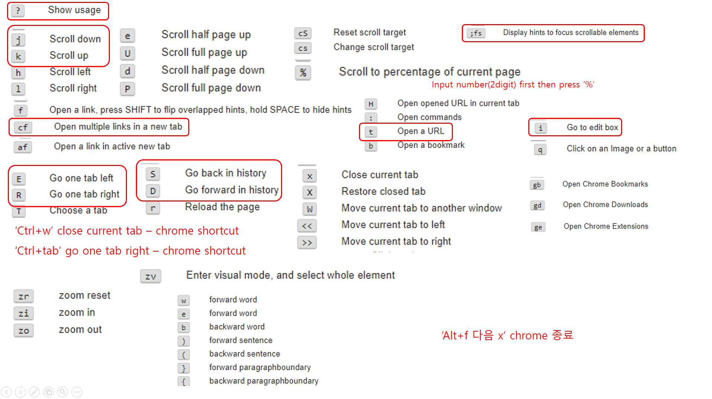

Created: 2023-03-17 Fri 12:17
| yt 현재 탭 복사 |

| C-Sh-t | menu-history-recently closed (most recently) |
| C-w | close tab |
| M-F2 | command |
| Su-a | Show Activities |
| Su-F1 | help |
| Su-` | change between same applications |
| Sh-Su-arrow | moving current window to monitor arrow direction |